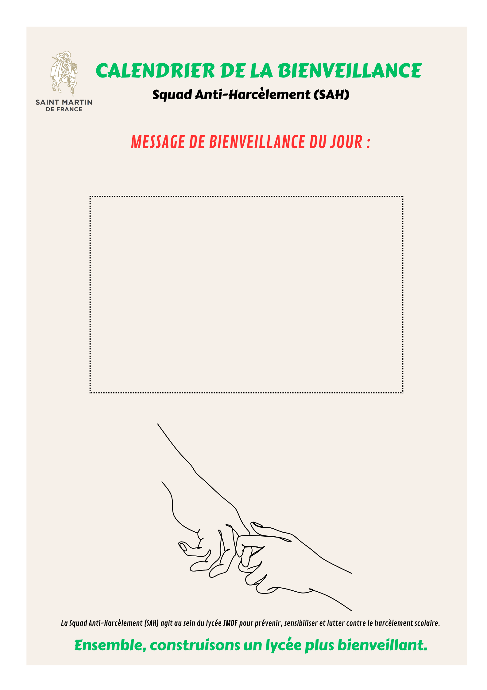

La Squad Anti-Harcèlement (SAH) est une équipe d'élèves engagés pour prévenir et lutter contre le harcèlement scolaire au sein du lycée Saint-Martin-de-France. Son action contribue à créer un climat de confiance, de respect et de bienveillance entre tous.

Les missions des membres
- Participer aux réunions mensuelles de la SAH
- Proposer des idées d'actions et contribuer à leur réalisation
- Relayer les campagnes de sensibilisation (affiches, posts, ateliers)
- Écouter et soutenir les autres élèves avec discrétion
- Animer (en binôme) le compte Instagram @sah-smdf
- Aider à la présentation de la SAH aux nouveaux élèves
Les qualités attendues
- Bienveillance et écoute
- Disponibilité et ponctualité
- Confidentialité absolue sur les situations sensibles
- Esprit d'équipe et fiabilité
- Motivation réelle et force de proposition
Cadre d'engagement
Une réunion par mois, plus la préparation des actions selon disponibilité. L'engagement est volontaire et reconduit chaque année. Une attestation officielle pourra être remise en fin d'année aux membres actifs.
Contact référent
Eduardo Vasconcellos — Responsable Maison Abbaye, encadrant de la Squad Anti-Harcèlement.